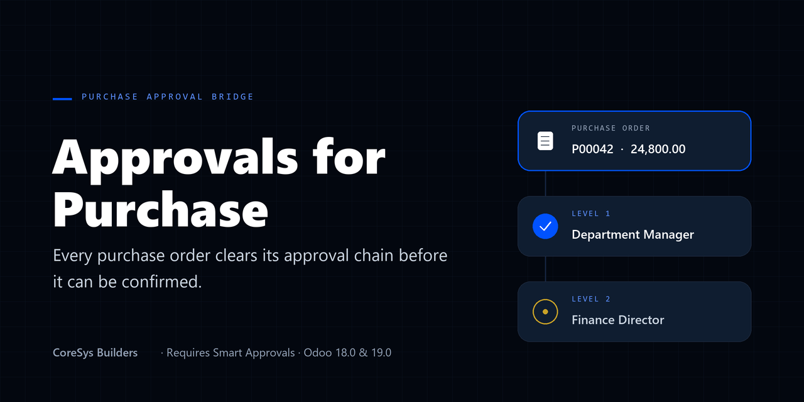
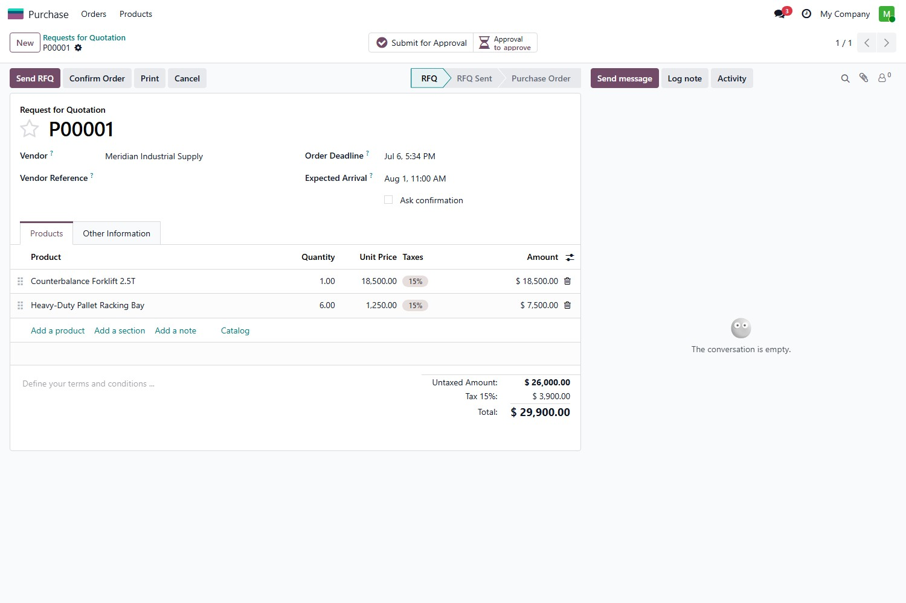
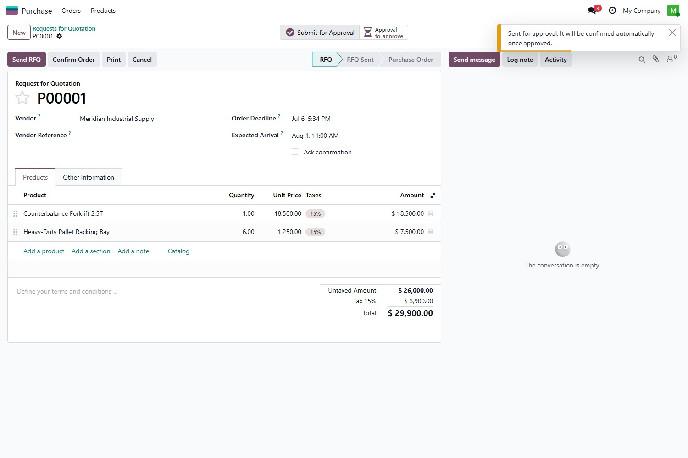
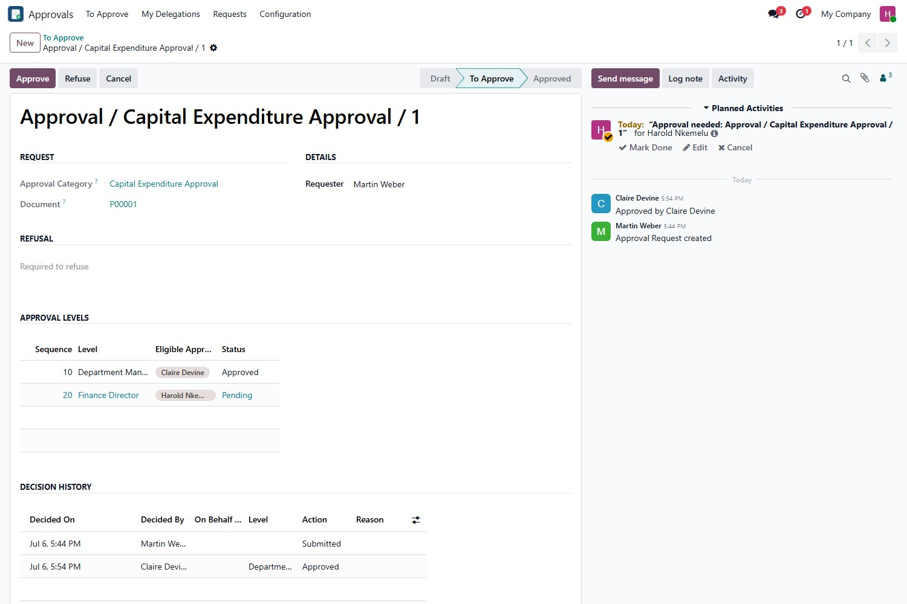

This is the Purchase add-on for Smart Approvals. It requires the Smart Approvals engine to be installed — install the engine first, then add this module for a working purchase-order gate.
Connect the Smart Approvals engine to your purchase orders: any order that falls under an approval category is held until every level has signed off, and only then does it confirm. The controls live on the order itself — nothing new to learn, nothing to route around.
Define which orders need approval in the engine — for example, any order above a set amount, or from a particular company — and this bridge enforces it on the purchase order. Confirming a gated order does not push it through; it sends it for approval and holds it until the chain clears. Once approved, the confirmation runs on its own.
The gate sits on the order, not a side screen. A Submit for Approval action and an Approval status button appear in the purchase order's button box, beside the standard controls. Buyers approve from where they already work.
A hold that cannot be routed around. Confirmation is gated at the ORM boundary, not just on the button. A raw write that flips an order to a confirmed state, a scripted create, or an import is re-checked against the approval rules and rejected if the order still needs sign-off.
Editing a held order re-opens approval. The bridge watches the order total and its lines. Change a quantity, a price, a tax or a product on an order that is waiting — or already approved but not yet confirmed — and its approval is invalidated, so a bigger order can never slip through on an older sign-off.
Any purchase order that matches an approval category is held. The controls appear on the document itself — a Submit for Approval action and an Approval status button, right in the button box.

Press Confirm on a gated order and, instead of confirming, it is held and submitted for sign-off. There is nothing else to remember: once the chain clears, the confirmation runs automatically. Try to force the order to a confirmed state directly and the gate stops it.

Each level's approvers get the request in their personal To Approve inbox, with Approve and Refuse in the header. Approve, and it advances to the next level; refuse with a reason, and it stops — the order stays unconfirmed.
Each submission and decision is recorded against the order's request: the level, the action, who decided and when, and the reason on a refusal. The trail is immutable, so an approved purchase order always shows exactly how it was cleared.

coresys_approvals) — the approval categories, chains, inbox, audit trail and delegation all live therepurchase moduleCoreSys Builders. © 2026, all rights reserved. Licensed under the Odoo Proprietary License v1.0 (OPL-1); redistribution and resale are not permitted. Questions and feature requests are welcome at coresysbuilders.com.